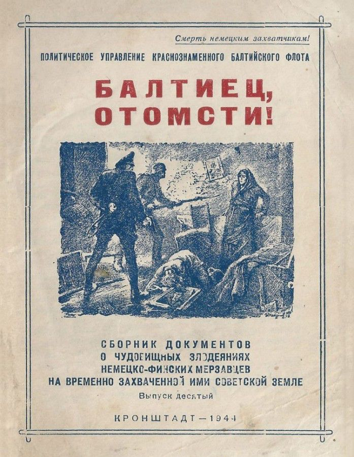

Балтиец, отомсти! Сборник документов о чудовищных злодеяниях немецко-финских мерзавцев
3 ноября, 18:17

Некоторые деятели нашего общества по неизвестной для самого общества причине вдруг решили забыть трагические страницы отечественной истории. И даже не только их – забыли то, что они сами писали в своих собственных книгах. В ту пору, когда они ещё не занимали министерских постов, а были «просто писателями». Придётся помочь этим общественным деятелям.
Передо мной лежит брошюра, изданная в СССР в 1944 году. Название у неё вполне исчерпывающее. Ставящее точку на «дискуссии» о том, может или не может в России, тем более в Ленинграде-Петербурге, быть открыта мемориальная доска финскому военачальнику и государственному деятелю, и бывшему русскому офицеру Карлу Маннергейму. Вот название этой брошюры:
«Балтиец, отомсти! Сборник документов о чудовищных злодеяниях немецко-финских мерзавцев на временно захваченной ими советской земле».
Думаю, что после прочтения содержимого этого документа вопросов насчёт Маннергейма и его роли в борьбе против нашего народа не останется. Зверства финских союзников Гитлера были под стать палачам их СС.
И ещё – финских палачей в 1944 году наши деды называют именно «маннергеймовцы».
Войска Ленинградского и Карельского фронтов совместно c моряками Краснознамённого Балтийского флота, перейдя в наступление на Карельском перешейке и в Финском заливе, прорвали мощные, глубоко эшелонированные укрепления финнов, разгромили в ожесточенных сражениях отборные шюцкоровские части, овладели городом Выборг и столицей Карело-Финской ССР — городом Петрозаводск, очистили от противника. Кировскую железную дорогу, связывающую Ленинград с Мурманском, освободили тысячи населённых пунктов и продолжают победоносно двигаться вперед, уничтожая кровавого, жадного и хитрого врага. Каждый шаг но освобождённой земле открывает перед взором наших воинов страшные картины чудовищного опустошения, кошмарных зверств немецко-фашистских палачей, издевательства над попавшими в их кровавые лапы советскими людьми. Нет на человеческом языке таких слов, которыми можно было бы рассказать о подлейших преступлениях финнов — гнусных холуев Гитлера, пытающихся перещеголять в жестокости своих звероподобных хозяев.
Мы уже знаем о массовом истреблении русских людей немецкими бандитами, напялившими на себя солдатские и офицерские мундиры. Мы следили за Харьковским процессом, мы видели, что сделали гитлеровцы в Пушкине, Петродворце, Новгороде и других городах, ныне освобождённых из фашистского плена. Мы узнали страшное слово—«душегубка» — этот «научный плод» изощренного садизма немецких подлецов, но то, что увидели наши бойцы на Карельском перешейке, превзошло даже самые мрачные предположения людей, познавших за три года войны, какого мерзкого врага они имеют перед собой. Кровь стынет в жилах при одном упоминании о страшных злодействах финнов. Перед нами документы, рассказывающие о чудовищных преступлениях маннергеймовцев и их немецких хозяев.
Прочти, товарищ балтиец, эти документы прочти их перед тем, как идти в бой, и твёрже будет твоя рука, сжимающая оружие, зорче станет твой взгляд, целящийся в то место двуногого фашистского зверя, где у людей обычно бывает сердце.
Мсти немецко-финским захватчикам!
Финские мерзавцы не уйдут от расплаты
Лахтари замучили пленных моряков
Девять автоматчиков под командованием лейтенанта Андрея Егорова, пользуясь темнотой, ворвались на окраину населённого пункта и навязали врагу бой. Демонстрируя направление главного удара, небольшая группа автоматчиков должна была сдержать натиск превосходящих сил противника. Храбро дрались отважные бойцы! Три раза контратаковали финны горстку храбрецов, три раза откатывались назад, оставив более 60 убитых и раненых. Ряды наших автоматчиков тоже редели. Их осталось только пить. Смертью героя погиб офицер Егоров. Главный старшина Анкудинов, раненный в голову и грудь, принял командование на себя. Боезапас был на исходе Анкудинов приказал сапёру Дуднику взять тело убитого офицера Егорова и идти в тыл, а на обратном пути захватить боезапас.
Остались только трое: Анкудинов, Тарасов и Ростовцев. Финны пошли в четвёртую контратаку. Краснофлотцы сражались, пока хватало сил. От полученных рал балтийцы пали без сознания, и тогда финны утащили полумёртвых моряков в расположение своей части.
Когда наши части прогнали финнов, они обнаружили останки трёх балтийцев. Вот акт, составленный на месте варварской расправы финнов с нашими товарищами. Акт этот подписан старшим лейтенантом медицинской службы А. П. Смерчковым, старшиной 2-й статьи М. М. Негода и краснофлотцами Пилипенко и Остапенко.
«Мы, нижеподписавшиеся, в составленном нами медицинском акте свидетельствуем о дикой расправе финских мерзавцев, учинённой над тремя советскими моряками-автоматчиками: главным старшиной Николаем Филипповичем Анкудиновым, краснофлотцами Сергеем Сергеевичем Ростовцевым и Григорием Андреевичем Тарасовым, чьи изуродованные и обезглавленные трупы были нами обнаружены на скотном дворе в ныне освобождённом посёлке.
Финские негодяи выместили свою звериную злобу к советским людям на трёх тяжело раненных моряках. Все три трупа обнажены до колен, причем головы отделены от туловища ударами топора. У старшины Анкудинова выдавлены оба глаза, отрезаны уши и нос. До неузнаваемости изуродованы грудь, спина и область половых органов. Не менее тяжёлым пыткам подверглись также во время допроса Тарасов и Ростовцев. У первого из них в нижней части живота вбит острый деревянный кол и обрублены все пальцы на левой руке. На теле Ростовцева 11 ножевых ран, нанесённых в область сердца, живота и половых органов.Комиссия категорически свидетельствует, что три советских моряка попали в плен к финнам в тяжёлом состоянии, имея несколько ранений, о чём также свидетельствуют повязки и вата, обнаруженные нами возле трупов...»
Сваренный живьём боец
Недавно моряки Ладожской Военной флотилии, выбив финнов из одного опорного пункта, северное реки Тулоксы, обнаружили бывший лагерь русских военнопленных. За колючей проволокой краснофлотцы нашли железную бочку. В ней лежал боец со страшными волдырями и ранами по всему телу. Неподалеку валялась красноармейская пилотка и пробитая осколками снаряда каска. Медицинская экспертиза и составе офицеров Третьякова, Тарасенко, лейтенанта медицинской службы Подгорной и сержанта Важнова установила следующее: захватив тяжело раненного и не имеющего возможности сопротивляться красноармейца (фамилии его установить не удалось) в плен, финские лахтари пытали его, нанося по и без того израненному телу уколы ножом. Взбесившиеся финские мерзавцы выдумали такую пытку, при упоминании о которой кровь стынет в жилах и в горле останавливается дыхание: они втиснули красноармейца в бочку с водой и подвесили бочку над костром...В жесточайших муках погиб красноармеец.
У кого не загорится сердце страстной потребностью отомстить потоками чёрной фашистской крови за страдания неизвестного красноармейца?!
Что осталось от воина Мищенко
Смелый и отважный боец Фёдор Николаевич Мищенко возвращался c очередной разведки, когда на него напала целая орава находившихся в засаде финнов. Мищенко понял, что его пытаются захватить в плен живьём. Он остановился, и когда лахтари начали приближаться к нему со всех сторон, мужественный краснофлотец выхватил и бросил перед собой заряженную гранату. Он убил себя, но одновременно отправил в землю и несколько финских захватчиков. Уцелевшие маннергеймовцы, разъярённые мужественным поступком Мищенко, охватили его труп и в бешенстве разрубили на части. Они отрубили руки воина, продолжавшие сжимать оружие, они бросили в костер истерзанное осколками, обезображенное тело и сожгли его...
Краснофлотцы с катерного тральщика, из состава Краснознамённого дивизиона офицера Овадовского, прогнав фашистов с этого участка побережья Финского залива, нашли руки и обгоревшие кости героя. Неподалеку в траве были найдены документы, пробитые во многих местах осколками гранаты. Среди этих документов три удостоверения о награждении Фёдора Николаевича Мищенко медалями «За отвагу», «За боевые заслуги» и «За оборону Ленинграда», а также орден Славы.
Как чёрное вороньё, набрасываются финские подлецы даже на мёртвое тело советского бойца. Они задыхаются от желчи, жгущей их звериное нутро. Трусливые шакалы! Живой матрос им страшен, а вот над мертвым телом они могут кощунствовать!
Но месть, неукротимая месть ждёт палачей. День расплаты близится!
Застенок на острове
Наши разведчики обнаружили на одном из островов западнее Выборга следы лагеря для русских военнопленных. Островок этот теперь уже за линией фронта. Лагерь пуст. Финны угнали заключённых в глубину страны. Но каждый метр за двухрядной колючей проволокой лагеря свидетельствует о мучительном режиме, установленном финнами на этом островке кабалы, об истязаниях, пережитых здесь советскими людьми.
...Их было 200 человек. Они жили в двух холодных деревянных бараках, на цементном полу, на нарах, приделанных к стенам в два этажа. На окнах — проволочные решётки, на дверях висят тяжёлые замки. Повсюду к вкопанным в землю кольям прибиты таблички: «Ходить но двору запрещается», «Входить в столовую в одиночку запрещается», «Смотреть в окна запрещается», «Петь русские песни запрещается», — словом, всё здесь было запрещено.
Под маленьким домиком канцелярии — в сыром подвале — одиночные карцеры для «провинившихся». Карцеры — это гробообразные ящики, приставленные к стене. Человека запирали в этот ящик на сутки, на трое суток, в ящике можно только стоять...
На полянке за колючей проволокой выдаются несколько бугорков. Это — общие могилы, куда финны закапывали убитых или умерших от истязаний и голода советских людей. В щелях нар и стен наши разведчики нашли записки, оставленные заключёнными лагеря перед тем, как их угнали с острова. Вот поспешно набросанные карандашом строки на мятом клочке бумаги:
«...Мы слышим залпы наших русских орудий... Белофинны бегут из Выборга. Паника невообразимая. Наша стража напугана. Они с ужасом смотрят на то, что финские артиллеристы оборудуют свои позиции в самом Выборге. Нас собираются вывозить отсюда. ...»
Подписи нет на записке. Она, очевидно, написана 15 июня, ибо другая записка, написавшая тем; же почерком, помечена 16 июня:
«...Товарищи бойцы! Отомстите белофиннам за наши мучения! Пусть они на своей шкуре почувствуют, что значит отрубать руки и ноги у живых людей, что значит бить их палками и морить голодом в карцере. Видно, им последние дни жить здесь. Сегодня нас угоняют дальше. Что нас ждёт — не знаем. Привет освободителям Выборга. Да здравствует товарищ Сталин!..»
Вот ещё одна записка, написанная на картоне:
«... .Товарищи бойцы! После того, как наши самолёты бомбили Выборг, все бегут. Увозят отсюда и нас — 200 человек. Среди финнов большая паника. Они смертельно напуганы нашими бомбами и снарядами. Не знаем, куда нас повезут...»
На стене барака углем нацарапаны две строчки: «Увели нас отсюда в ночь на 17 июня». «Мы работали по 18 часов в сутки, копали огороды, сеяли, пололи, растили овощи для финских фашистов. А нас они кормят собачьей бурдой, отходами своих кухонь. Трогать овощи МЫ НЕ смеем, за это нас бьют палками. Худо нам в неволе, товарищи, очень худо...»
Палачи-садисты
18 июня 1944 года наши части выбили финнов из населенного пункта Каунярванкюля. Возле одного из домов бойцы обнаружили четыре обезображенных трупа. С величайшим трудом удалось установить личность погибших товарищей. Это были — младший сержант Я. М. Самохин, ефрейтор Парфёнов, старший сержант Козлов и младший лейтенант медицинской службы Александров.
Вот что установила на основе допроса пленных и уцелевших жителей специальная экспертная комиссия. Четыре советских воина, будучи в разведке, попали в окружение и сражались до тех пор, пока не пали тяжело раненными, истекая кровью. В бессознательном состоянии они были связаны, и их перетащили в Каунярванкюля. Здесь их привели в чувство и подвергли мучительному допросу. Ни один из советских патриотов не проронил ни одного слова. Тогда разнузданные финны, обычно трусливо удирающие при появлении наших войск, показали свою волчью натуру, они начали избивать палками раненых, да к тому же ещё связанных, русских воинов, но и этими издевательствами им не удалось добиться ни слова от пленных русских. И тогда маннергеймовцы развязали ноги Самохину и приказали ему бежать. Самохину было только 24 года. Ему, вероятно, очень хотелось жить. Он слышал вдали гул наших орудий, и он побежал. Но это был только «ловкий трюк» финских садистов. Как только юноша сделал несколько шагов, шюцкоровший офицер, хохоча во всё горло, разрядил свой пистолет в ноги несчастному бойцу. Самохин упал на колени. Точна орава собак, набросились на бойца маннергеймовцы. Они со смехом разорвали на Самохине брюки и со всего размаха всадили ему нож в половые органы, потом вытащили нож и снова всадили его в живот, снова вытащили и снова всадили его в живот. Второй шюцкоровец схватил Самохина за волосы и, выхватив из ножен финский нож, воткнул его в горло стонавшему краснофлотцу. Вид крови опьянил бешеных собак-финнов. Они начали соревноваться в том, кто больше нанесёт ран русскому. Псы опомнились лишь тогда, когда увидели, что колят ножами мёртвое тело.
Тогда финны выбрали следующую жертву. Они придумали новый «трюк». Привязав к ногам Парфёнова мину, они и ему приказали бежать. Парфёнов так же, как и Самохин, был совсем молод. Ему было 26 лет. Но Парфёнов видел смерть своего друга, и он не пожелал бежать. Бледный от потери крови и от пережитых потрясений, он стиснул зубы и гордо отвернулся от презренных палачей. Взбешенные маннергеймовцы накинули на шею Парфенову верёвку и потянули его. Раздался взрыв. В воздухе пронеслась и упала оторванная нога. Там её, на расстоянии 25 метров от трупа, нашли потом наши бойцы. Когда улеглась пыль, поднятая взрывом, лахтари набросились с финками на умирающего бойца. Солдат всадил ему лезвие финки по самую рукоятку между лопаток и со звериным рыком несколько раз провернул нож в теле, а офицер хладнокровно зарядил свой пистолет и снова разрядил его прямо в горевшие ненавистью к врагам глаза русского воина.
Наступила очередь Козлова. Он уже умирал от ранее полученных ран, но и его не миновала жестокая, предательская рука финского палача! Шюцкоровец с обезьянними ужимками подошёл к связанному Козлову и, утрируя жесты парикмахера, взял бойца кончиками пальцев за нос, второй рукой, вооружённой окровавленной финкой, он медленно и старательно отрезал Козлову нос... Козлов умер. Обозлившийся финн схватил автомат и выпустил очередь в мертвеца.
Младший лейтенант Александров тяжело дышал, он пробовал вырваться из пут, чтобы умереть свободным. Попытку Александрова заметил офицер, он поднял с земли тяжёлую дубину и ударил пленного по голове. Это послужило сигналом для остальных лахтарей. Каждый из них старался посильнее ударить советского офицера. Сначала они начали забрасывать Александрова тяжёлыми камнями. Кровь сочилась по лицу, по груди, по одежде. Одежда на связанном побурела от крови, но ни одного стона не услышали финны от мужественного офицера. Тогда один из маннергеймовцев прицелился и выстрелил Александрову прямо в голову... Пройдут года. На месте гибели Самохина, Парфёнова, Козлова и Александрова русские люди, наверно, поставят памятник отважным воинам, принявшим мученическую смерть во имя счастья советского народа. Вокруг памятника вырастут чудесные цветы, поэты сложат о героях песни. Но никогда не изгладится из наших сердец великая ненависть к проклятым финским садистам.
Кровь за кровь! За каждую каплю священной КРОВИ наших бойцов нужно пролить потоки змеиной чёрной крови финских злодеев!
Помни замученных и мсти врагам!
Лахтари добили двух раненых моряков
Группа разведчиков морской пехоты скрытно высадилась на занятый финнам остров. Одновременно сюда подтягивались подразделения финской пехоты. Вскоре наших разведчиков с трёх сторон окружили вражеские солдаты.
Одерживая огнём станковых пулемётов наседавшего врага, балтийцы медленно отходили к берегу, на более выгодный рубеж обороны. Станковый пулемет «Максим», из которого били по лахтарям краснофлотцы Иван Кузьмич Вишняк и Иван Андреевич Кушнир, оказался наиболее выдвинутой точкой нашей обороны. Невдалеке, несколько сзади, стреляли по финнам краснофлотцы Слободяник и Гизнатулин.
Финская мина разорвалась на позиции станкового пулемёта. «Максим» замолчал, выведенный из строя. Тут же лежали истекающие кровью храбрые балтийцы Вишняк и Кушнир. Финны заметили, что пулемёт молчит, и вот к раненым пулемётчикам устремилась группа разъярённых лахтарей. Слободяник и Гизнатулин убили пять финнов из этой группы, но сами были ранены и больше не могли вести огонь.
Оба они потеряли сознание. Когда Слободяник очнулся, то услышал дикий вой, доносившийся с того места, где лежали Вишняк и Кушнир. Преодолевая мучительную боль, одной рукой зажимая рану на шее, моряк приподнялся. Страшное зрелище представилось его глазам. До десятка финнов во главе с офицером истязали раненых Вишняка и Кушнира.
Слободяник видел, как финский офицер ножом полосовал лицо русского матроса. Затем финский солдат нанёс Вишняку несколько ударов саперной лопатой по голове. Выстрелами из пистолета в упор офицер добил беззащитную жертву.
Кровожадные звери упивались страданиями полуживых балтийских матросов. Покончив с Вишняком, офицер и солдаты начали истязать Кушнира. Они били его сапёрными лопатами, топтали коваными каблуками сапог, кололи ножами. Что было дальше, Слободяник не помнит, потому что сам лишился чувств. Позже, когда на остров высадились наши основные силы, морские пехотинцы нашли изувеченные, растерзанные трупы краснофлотцев Ивана Кузьмча Вишняк и Ивана Андреевича Кушнир. Головы их были изрублены сапёрными лопатками, лица изрезаны финскими ножами, руки, ноги, грудь прострелены из пистолета в упор. Боевой товарищ! Идёшь в бой, помни замученных врагами краснофлотцев Ивана Кузьмича Вишняк и Ивана Андреевича Кушнир
Смерть лахтарям!
Смерть лахтарям!
Смерть убийце-лахтарю!
За кровь замученных людей.
За женщин, стариков, детей
Ответит нам лахтарь-злодей!
Раздавлен будет враг заклятый!
Ничто убийцу не спасёт!
Наш день настал: идёт расплата.
Советский грозный суд идёт!
Далее идет описание преступлений вермахта на территории оккупированной Белоруссии.
http://sovsojuz.mirtesen.ru/blog/43033797579/O-prestupleniyah-mannergeymovtsev-na-okkupirovannoy-territorii-S - цинк
PS. Плюс читатели дополняют:
О злодеяниях и зверствах финско-фашистских захватчиков : (сборник документов). - [М.], 1944
http://elib.tomsk.ru/purl/1-8242/ - полностью здесь
Плюс:
Материалы Чрезвычайной Государственной Комиссии http://www.nwapa.spb.ru/sajt_ibo/vistavki/VOV70/vov_komissia.html и http://samlib.ru/b/borisow_aleksej_wiktorowich/materialychgk.shtml